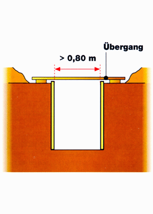

Sichere Übergänge
Gräben mit mehr als 0,8 m Breite sind mit Laufbrücken oder Laufstegen (b > 0,5 m) zu versehen.
Bei mehr als 1 m Grabentiefe sind die Übergänge beidseitig mit dreiteiligem Seitenschutz zu versehen.



Gräben mit mehr als 0,8 m Breite sind mit Laufbrücken oder Laufstegen (b > 0,5 m) zu versehen.
Bei mehr als 1 m Grabentiefe sind die Übergänge beidseitig mit dreiteiligem Seitenschutz zu versehen.